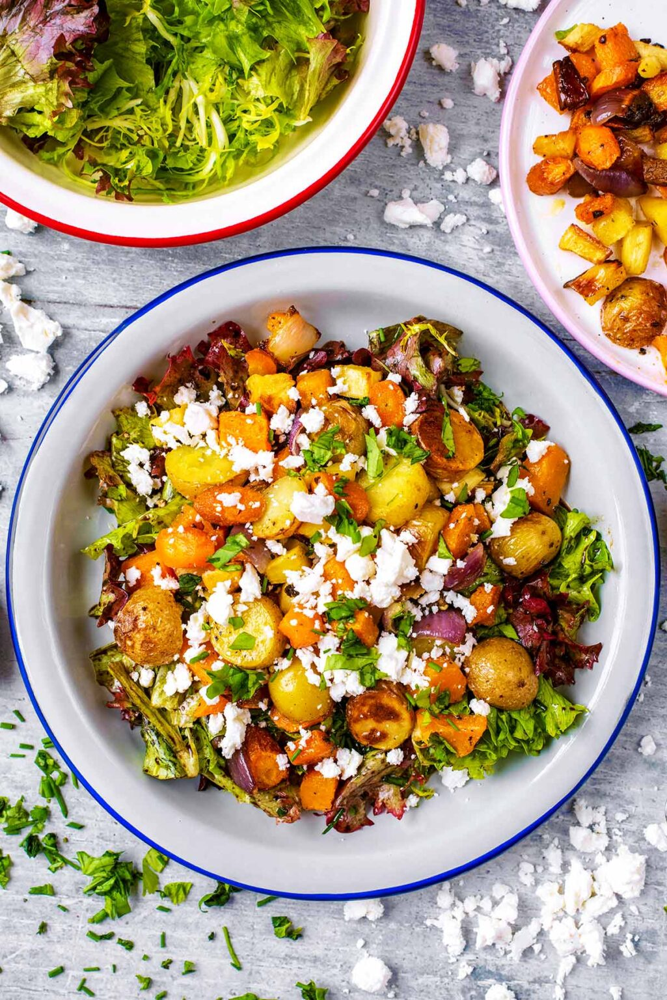

Warm Veggie Salad

Description
This Roasted Vegetable Winter Salad is a salad for people that think salads aren’t filling or they think they are boring. It’s the salad for people that think they don’t like salads! This recipe features carrots, potatoes, squash, and parsnips for a warm winter vibe, sitting atop a bed of greens.
Ingredients
- 1 Red onion
- 1 Butternut squash
- 10 baby potatoes
- 2 carrots
- 2 parsnips
- 1 tbsp olive oil
- 4 handfuls of greens
- 1 tbsp olive oil
- 2 tbsp vinegar
- 2 tbsp basil
- 2 tbsp parsley
Steps
- Chop all vegetables into chunks, toss with 1 tbsp olive oil, add salt and pepper, mix well
- Put on baking sheet, roast in oven at 400 degrees for 35-40 minutes.
- Make dressing by mixing olive oil, vinegar, salt, pepper, and herbs.
- Remove vegetables from oven and add to greens, drizzle dressing on top. Serve topped with feta.
Back to main page